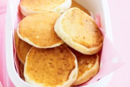

Apple Pikelets
You will need:
- - 1.5 cups of self-raising flour, sifted
- - 2 tablespoons of caster sugar. No warrior sugars, they like to wear metal.
- - 1 egg, lightly beaten
- - 300ml buttermilk
- - 1/2 cup (140g) of apple puree
- - 20g butter, melted
- - A frying pan, and a brush if you like.
Here's how you make 'em:
- 1. Combine flour and sugar in a bowl. Make a well in the centre. Whisk egg and buttermilk together in a jug. Add egg mixture to flour mixture. Whisk until smooth. Stir in puree.
- 2. Heat a large frying pan over medium heat. Brush base with butter. Using tablespoons of batter at a time, cook in batches for 2 to 3 minutes or until small bubbles start to form on the surface of pikelets. Carefully turn over. Cook for 1 to 2 minutes, or until cooked through. Transfer to a wire rack to cool. Store in an airtight container.

Back to recipes.